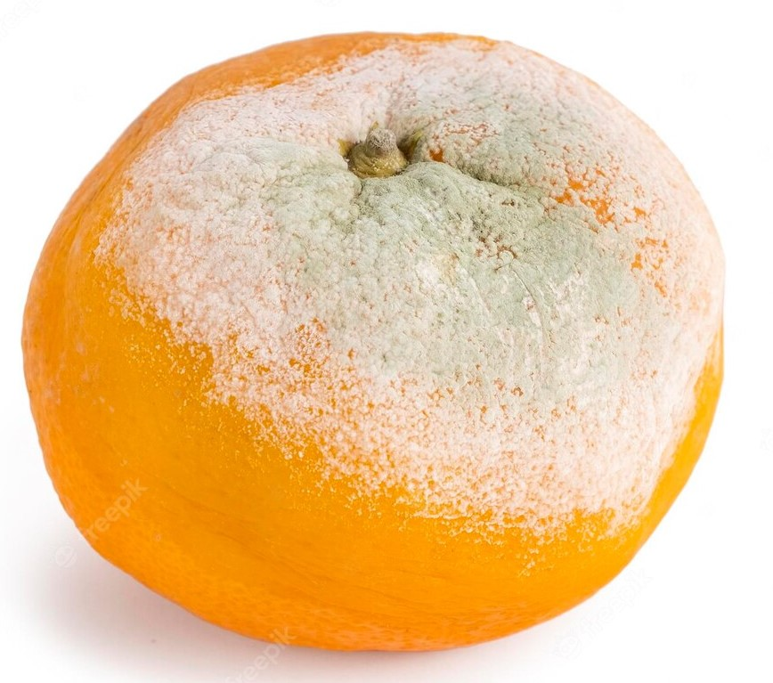

|
 |
 |
Agua da boa |
Quejin du bão |
Pão di onti |
água 100% pura retirada do esgoto de bairos nobres. |
queijo um pouco fora do tempo de validade. |
pão feito ontem por algum padeiro por ai. |
 |
 |  |
Pizza di queiju |
Mexirica du pé |
Méqui lixo |
pizza di onti feita com o "Quejin du bão". |
mexirica fresquinha pega na mixiriqueira da isquina. |
méqui lixo tambêm é feito do "queiju du bão" e só é vendido aqui. |